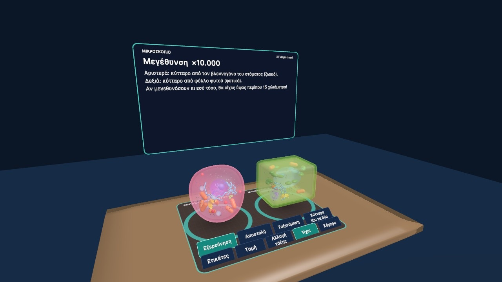
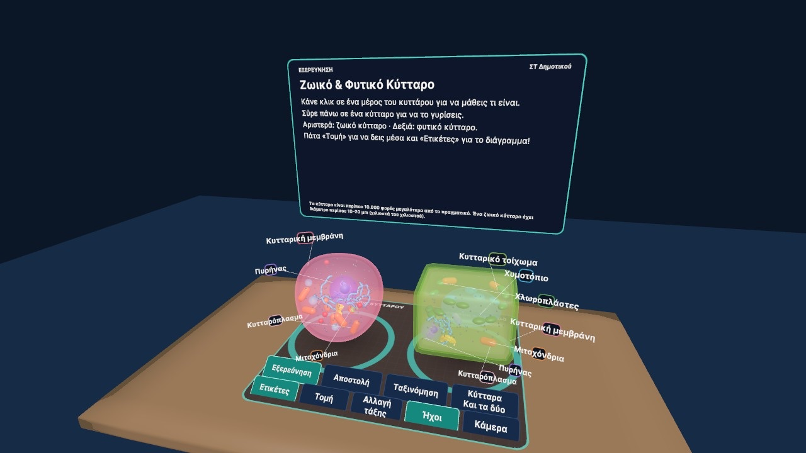
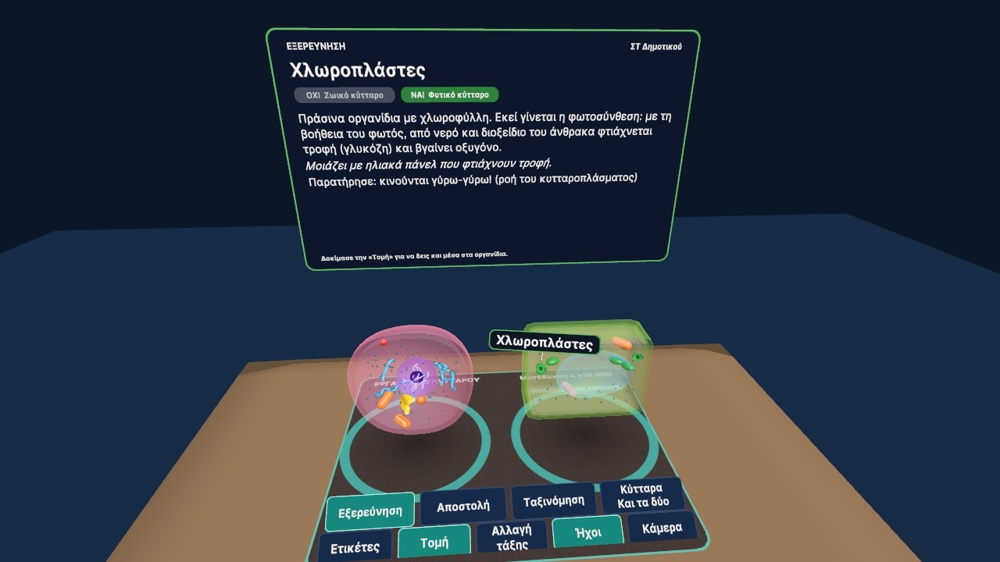
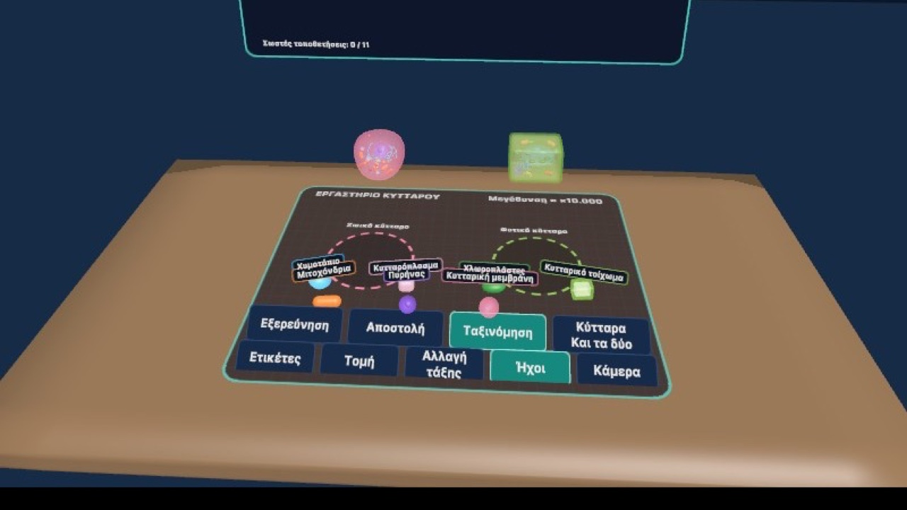

Το βίντεο γυρίστηκε τρέχοντας την εφαρμογή στο Unity. Στα γυαλιά Meta Quest 3 εμφανίζεται μέσα στον πραγματικό χώρο.
Το έργο
Ο μαθητής, καθισμένος στο θρανίο του, βλέπει μέσα από το passthrough του Meta Quest 3 τα δύο κύτταρα σε τρεις διαστάσεις και τα εξερευνά με τα χέρια του.
Τα μοντέλα των κυττάρων, τα υλικά και η τομή δημιουργούνται εξ ολοκλήρου με κώδικα. Η εφαρμογή λειτουργεί χωρίς διαδίκτυο και τρέχει και σε υπολογιστή, για προβολή στον πίνακα.
Υπάρχει και έκδοση WebXR που ανοίγει απευθείας από τον browser των γυαλιών, χωρίς εγκατάσταση, καθώς και οδηγός για τον εκπαιδευτικό.
Τι κάνει ο χρήστης
Αγγίζει ένα οργανίδιο
Βλέπει το όνομα και τη λειτουργία του, όπως στο σχολικό βιβλίο.
Πιάνει και γυρίζει το κύτταρο
Με τσίμπημα των δαχτύλων το περιστρέφει και το εξετάζει από κάθε πλευρά.
Κάνει τομή
Κόβει το κύτταρο για να δει το εσωτερικό του.
Δύο επίπεδα δυσκολίας
7 ή 14 οργανίδια, ανάλογα με την τάξη.
Κουίζ με πόντους
Με βοήθεια όταν ο μαθητής κολλάει.
Παιχνίδι ταξινόμησης
Σε ποιο κύτταρο ανήκει κάθε οργανίδιο;
Μέσα στην εφαρμογή




Τεχνολογίες
- Unity 6
- C#
- OpenXR
- AR Foundation
- WebXR
- Hand tracking
- Procedural meshes
- Λειτουργία χωρίς διαδίκτυο
- Οδηγός εκπαιδευτικού